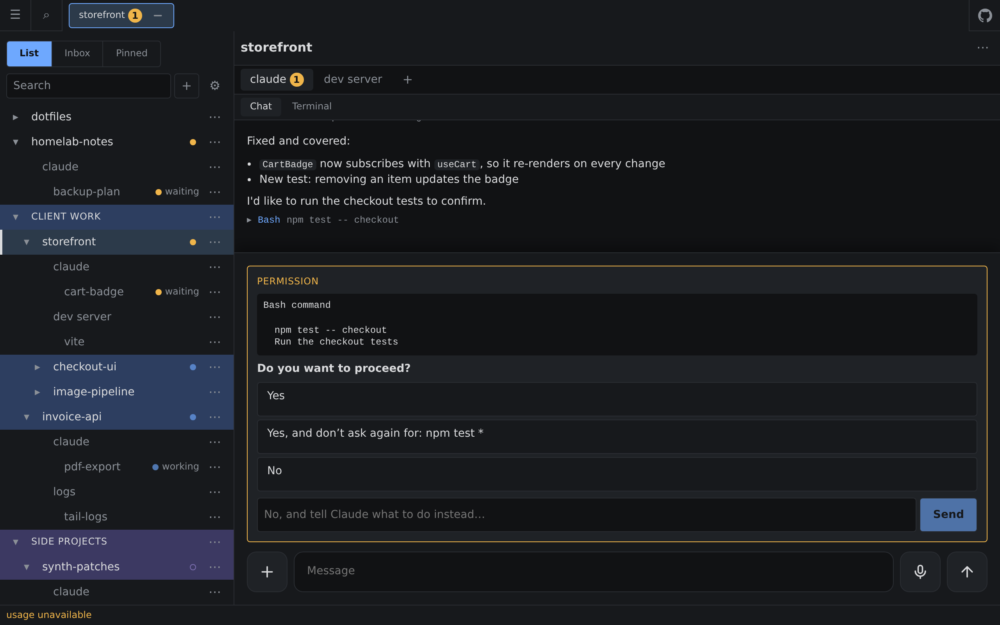
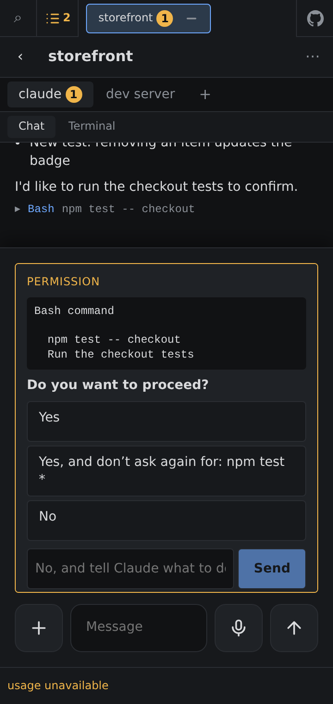
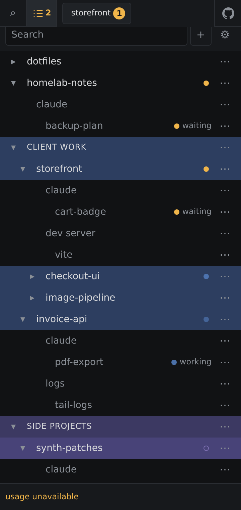
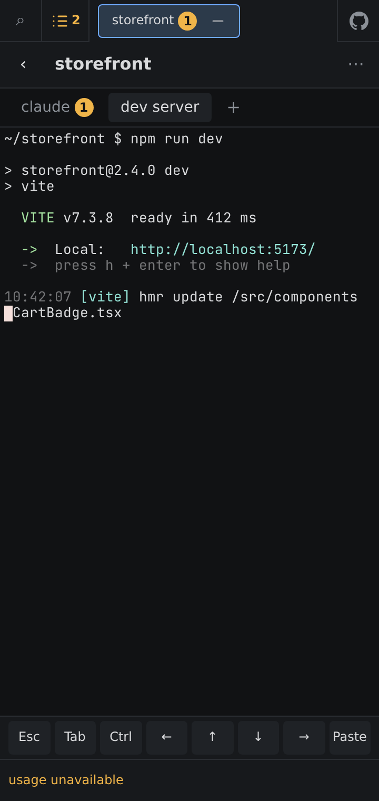
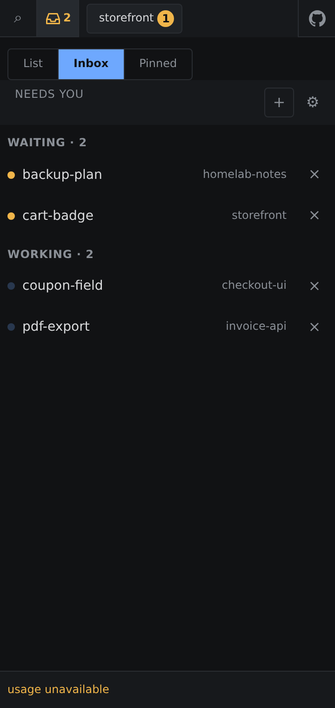
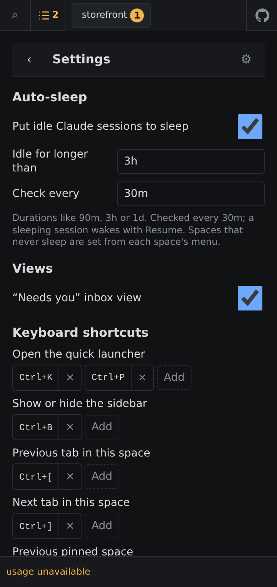

herdr-web
A browser client for herdr-core, on phone and desktop.
Built for Claude Code sessions running under herdr-core: your Herdr spaces, each session as a chat, and terminals. Runs next to herdr-core; reach it over your tailnet.
$ git clone https://github.com/dissonantP/herdr-web.git && cd herdr-web && ./install.sh apply

## chat
- Live chat view of any session: markdown, folded tool calls and thinking, edits as diffs
- Permission prompts, questions and plan approvals as buttons, plus a free-text answer
- Reply, stop, attach files and photos, slash commands with autocomplete
- New sessions with model, effort and permission mode; resume past ones
## spaces
- One tree of groups, nested spaces, tabs and panes, with status that bubbles up
- Create, rename, move, colour and delete at every level
- Search, Ctrl+P launcher, pins
- Same spaces and tabs as Herdr Desktop, live

## terminals
- Real terminal (ghostty-web) in any tab, with an Esc/Tab/Ctrl/arrows bar on phones

## notifications
- Push when an agent needs input, finishes or dies; agents can also push with a
herdr.notifylabel - “Needs you” inbox, waiting sessions first
- Mute or quiet a space, or pause everything

## sleep
- Sleep idle sessions to free memory, by hand or after a set idle time; resume in the same pane. Working or waiting sessions are never slept.

## app
- Installable PWA with its own login; settings shared across devices
## limits
- Chat, prompts as buttons, session status, automatic push and sleep/resume need Claude Code. The tree,
terminals and
herdr.notifypushes work with any program; other agents can be added as an agent adapter. - Linux with systemd only. It must run on the same machine as herdr-core.
- Not built for the public internet; see security.
! It is effectively root access to your machine.
It starts programs and types into terminals as your user. Anyone who gets past its login can run any command on that machine.
- 127.0.0.1 only
- Tailnet only. It listens on
127.0.0.1; expose it withtailscale serve. Never0.0.0.0, a port forward or Funnel. - 2fa in front
- Add a 2FA gate such as Authelia in front if you can. The app's argon2id login is the second layer, not the only one.
## install
Needs Linux with systemd, Node 24.7+, herdr-core and Claude Code.
git clone https://github.com/dissonantP/herdr-web.git
cd herdr-web
# build, login, push keys, the Claude hook, the service
./install.sh apply
# HTTPS on your tailnet only
tailscale serve --bg 7317The installer adds one SessionStart hook to ~/.claude/settings.json (it labels each pane with its
session id and never blocks Claude). Everything else stays in herdr's own folders
(~/.config/herdr, ~/.local/state/herdr) and one systemd user unit.